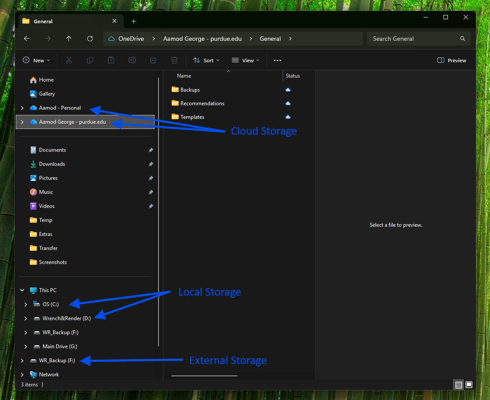
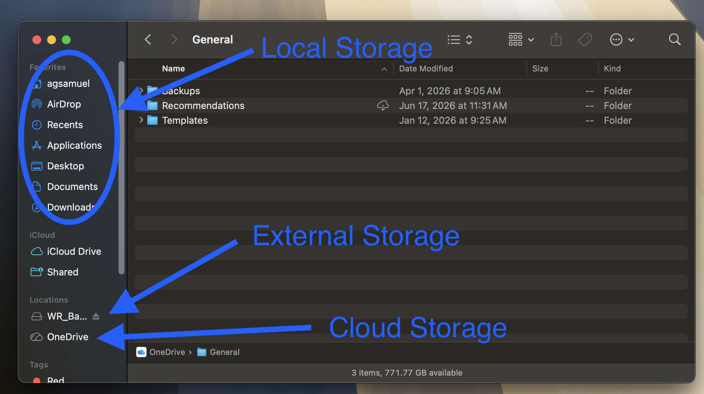
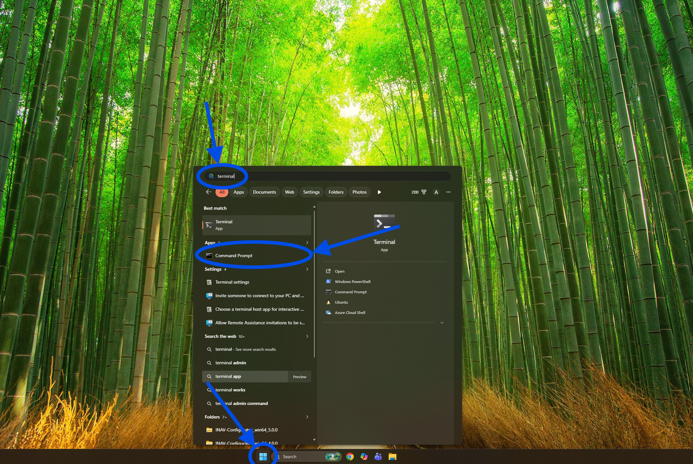
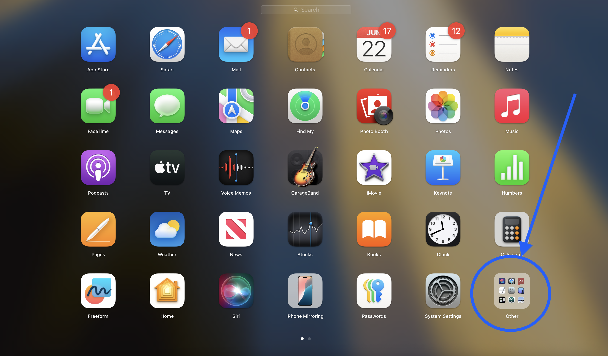
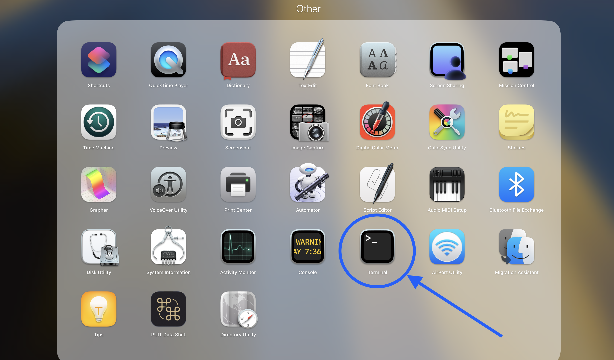

Sep 09, 2026 | 1211 words | 12 min read
Computer Basics and File Management#
This section introduces some basic computer literacy skills you will use in ENGR 131 and beyond. The focus is on how files are stored, how to keep your work organized, and how to use the graphical interface and the command terminal to move through your folders efficiently.
In this module, you will learn how to:
Explain the difference between folders, files, drives, and cloud storage
Create and maintain an organized folder structure for your coursework
Install and uninstall common applications responsibly
Open and use a terminal on Windows and macOS
Navigate folders in the terminal using core commands
Run terminal commands in VS Code by first moving to the correct directory
Drives and Storage: High-Level Concepts#
A drive is a storage location. Common examples are your local disk (for example C: on
Windows), an external drive, and cloud storage such as OneDrive.
Local storage: fast and available offline on your machine
External storage: portable but easy to disconnect or misplace
Cloud storage: accessible across devices but depends on internet and sync

Fig. 1 A screenshot pointing out the different types of storage seen in an explorer window in Windows.#

Fig. 2 A screenshot pointing out the different types of storage seen in a finder window on a Mac.#
For coursework, keep one primary working folder on local storage and back it up to cloud storage regularly. This can be done effectively using the OneDrive account that comes with your Purdue Microsoft account.
Course File Management and Submission#
Folder Organization Best Practices#
Use one consistent structure for the full semester so assignments are easy to find.
A practical example (only some samples of substructure shown):
Path: C:\Users\username\ENGR131\
C:\
`-- Users\
`-- username\
`-- ENGR131\
|-- Excel\
| |-- Excel 1\
| | |-- Pre-class\
| | |-- In-class\
| | `-- Assignments\
| `-- Excel 2\
| |-- Pre-class\
| |-- In-class\
| `-- Assignments\
|
|-- Python\
| `-- Python 1\
| |-- Pre-class\
| |-- In-class\
| `-- Assignments\
|
|-- projects\
`-- references\
Inside each module folder (ex: Excel 1), separate the files by what makes sense to you.
One way to organize the module folder is by the types of assignments. Avoid naming files
as new, final_final, or stuff; use descriptive names with dates or versions when
needed.
ENGR 131 Submission Standards#
When completing assignments for ENGR 131, you must follow strict file submission standards:
Save Locally: You should save your work to a specific folder on your local hard drive (such as an “ENGR 131” folder on your Desktop).
No Cloud Links: Do not submit links to online folders or cloud-hosted files (like OneDrive or Google Docs).
Submit the Exact File: You must upload the actual file directly to Gradescope.
Verify Submission: Always download and open your submitted file from the Gradescope confirmation screen to verify you uploaded the correct document.
Managing Applications#
Installing Applications#
Many apps are installed by opening a downloaded installer and following prompts.
Windows (.exe or .msi)#
Download only from an official source.
Double-click the installer file.
Follow prompts and keep default options unless you understand the change.
Verify the app opens from the Start menu.
macOS (.dmg or .pkg)#
Download from an official source.
Open the
.dmgor.pkgfile.If needed, drag the app into the
Applicationsfolder.Open the app once to confirm installation.
Warning!
Do not install unknown software from unknown links. Verify the publisher and file source before running installers. Do not trust files that are available from unknown third party content holders. Install software from reputable and known companies or open source software that has been reviewed extensively.
Uninstalling Applications Correctly#
Removing a desktop shortcut does not uninstall an application.
Windows: use (or ) and choose Uninstall.
macOS: remove the app from Applications (or use the vendor’s uninstall tool if provided), then empty Trash.
This helps reclaim storage and prevents old software from interfering with course tools.
The Command Terminal#
The command terminal is a command line interface (CLI), a text-based way to interact directly with the operating system. You type commands into the terminal, and a program called a shell interprets and runs them.
Accessing the Command Terminal#
To access the command terminal on Windows or macOS, you can find the application
visually (as illustrated in the figures below) or use the keyboard shortcut for your
operating system’s search feature (Windows on Windows or Command+Space
on macOS) and type terminal.
Windows: Command Prompt, PowerShell, or Windows Terminal

Fig. 3 A screenshot showing the key components of accessing a terminal window on a Windows machine.#
macOS: Terminal app

Fig. 4 A screenshot showing the Applications view (Launchpad) on a macOS machine.#

Fig. 5 A screenshot showing the ‘Other’ subfolder within Launchpad to access the Terminal app on a macOS machine.#
VS Code:
Pros and Cons of the Terminal#
Advantages#
Fast for repetitive tasks
Precise control over files and commands
Required by many coding and data tools
Challenges#
Commands must be typed accurately
Mistakes can affect files quickly
The interface is less visual for beginners
Use the terminal carefully and confirm your current folder before running commands that create, move, or delete files.
Basic Terminal Syntax and Commands#
Terminal commands generally follow this pattern:
program [options] [target]
where program is the name of an executable program you want to run (for example ls),
options are modifiers that affect how the program runs, and target is the file or
folder the program acts on. The square brackets in documentation, like [target],
indicate that part of the command is optional. Many programs accept one or more options
(also called flags), which often consist of a dash followed by a letter, such as -l in
ls -l.
Example
The command ls -l Documents lists the files in the Documents folder in long
format. Here, ls is the program, -l is an option that changes how results are
shown, and Documents is the target.
Useful navigation commands:
pwdto display the ‘Present Working Directory’ / current location in Terminal (macOS/Linux) and PowerShellcd(with no arguments) to display the full current path in Windows Command Promptls(macOS/Linux) ordir(Windows) to list files and folderscd folder_nameto ‘Change Directory’ / move into a foldercd ..to move up one foldermkdir new_folderto create a folder (MaKe DIRectory)mv [source] [destination]MoVes or renames a file or folder
Warning!
Commands using the terminal can be powerful and can cause permanent unintentional changes without warning. Make sure you know what a command does and what the modifiers actually do before executing any command in the terminal.
Note
Commands can differ slightly by operating system. Read error messages closely; they usually tell you what path or command is incorrect.
Using the VS Code Terminal Effectively#
When you run commands in VS Code (for example, running Python), the terminal uses its current folder as the starting point.
If your script is in a different folder, either:
find out where you are in the directory structure using the
pwdcommand,navigate with
cdto the folder containing the script, orprovide the full path in the command.
Example workflow:
Open the terminal in VS Code.
Run
pwdin Terminal (macOS/Linux) or PowerShell, or runcdwith no arguments in Windows Command Prompt, to confirm your location.Move to your script folder with
cd.Run your command, such as
python my_script.py.
If you skip navigation, commands may fail with "file not found" even when your code is
correct.